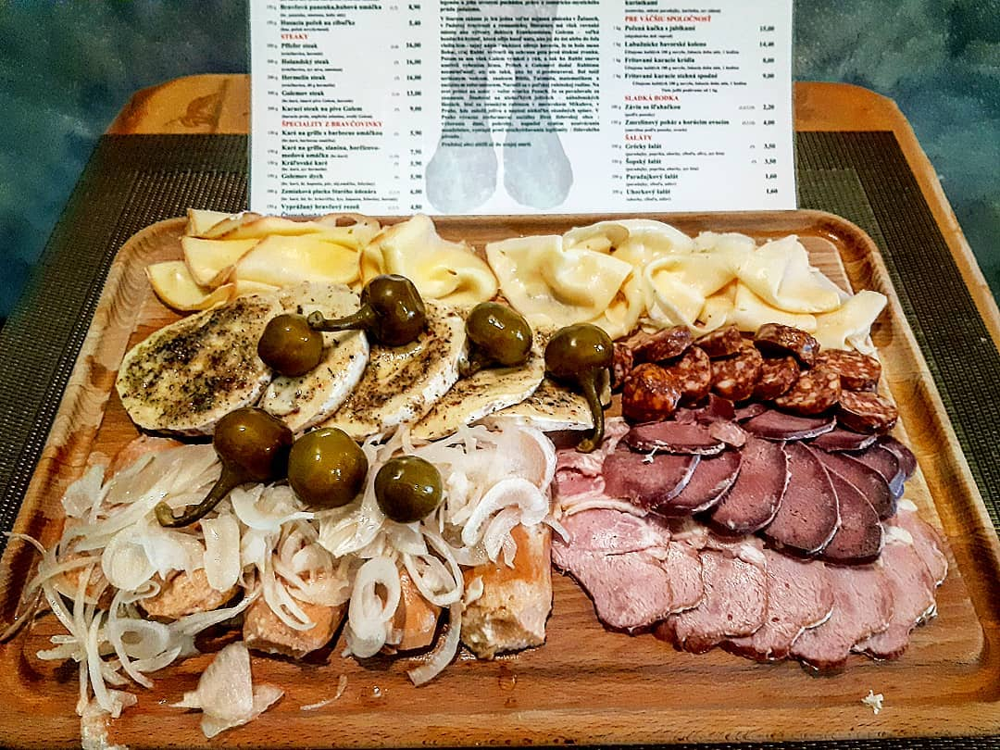

Studené predjedlá podľa @pivovargolemkosice — Normy Jedál
😋😋😋Denko s našimi studenými predjedlami - 🔸️utopence
🔸️nakladaný hermelín
🔸️údený hov.jazyk
🔸️syry🧀
🔸️klobáska
🔸️udená krkovička ✅nech sa páči✅
⬇️⬇️⬇️⬇️⬇️⬇️⬇️⬇️⬇️⬇️⬇️⬇️⬇️
#dnesjem#kosice#pivovargolem#studenepredjedla#syr#cheese#hermelin#udenyjazyk#@pivovargolemkosice